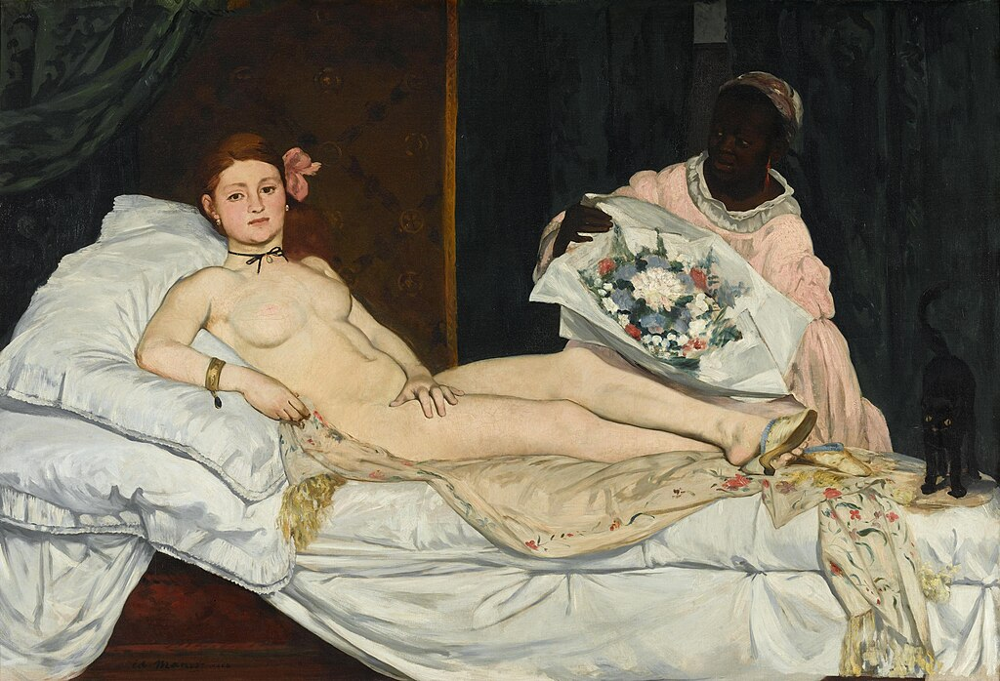
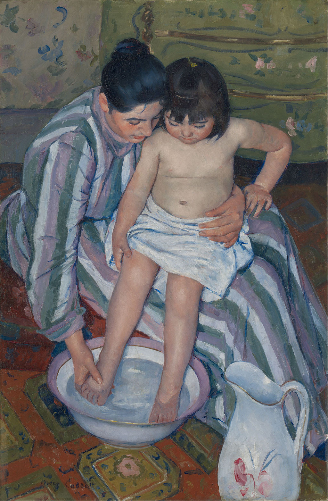
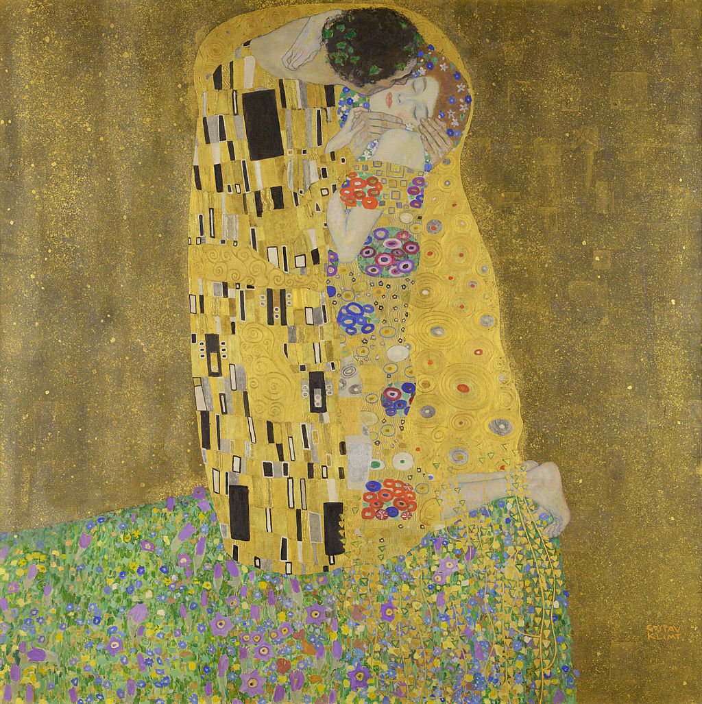
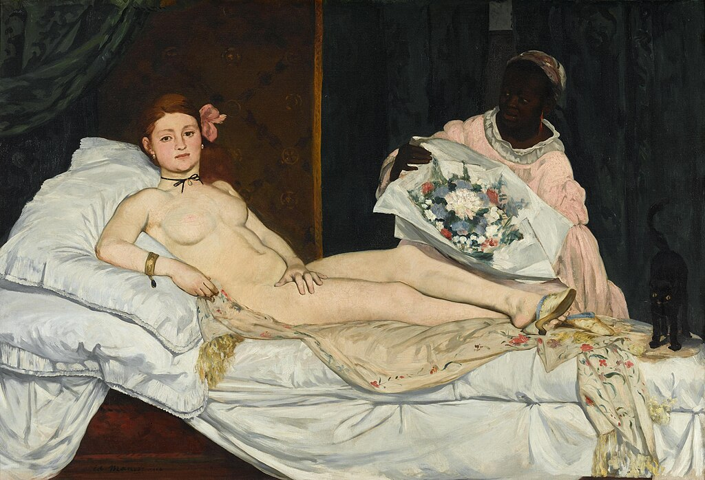
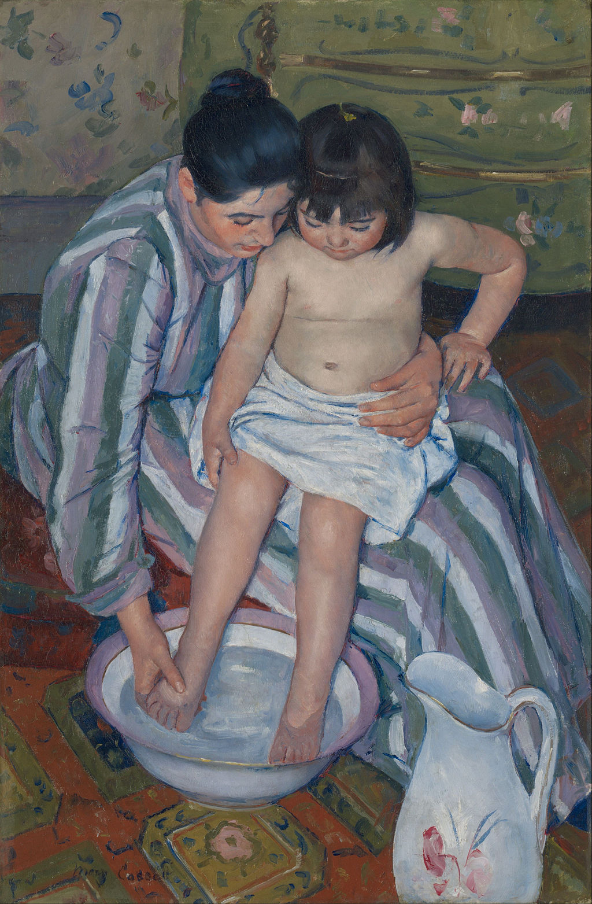
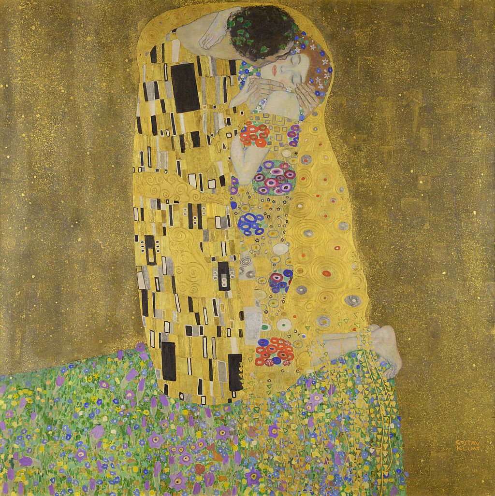

American Gothic

The Great Wave
Why Artium?
Artium is a curated digital gallery designed to help users explore art across movements, eras, and styles. Whether you are a casual browser or a serious collector, Artium connects you to iconic works and emerging artists in one accessible platform.
Our focus on visual discovery, thoughtful curation, and clean design allows art to remain the center of the experience.

Browse by Collection


 




